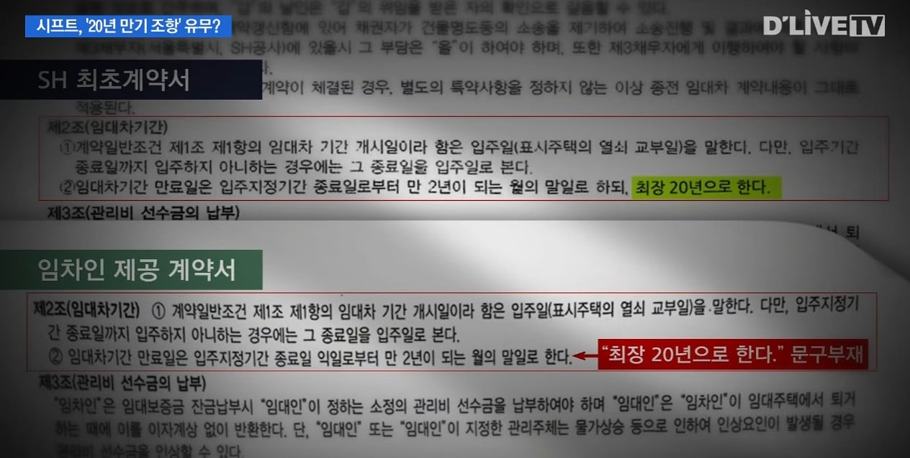
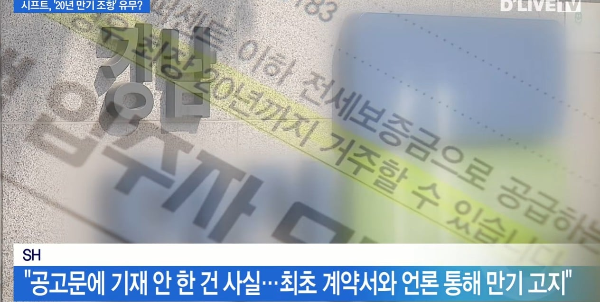
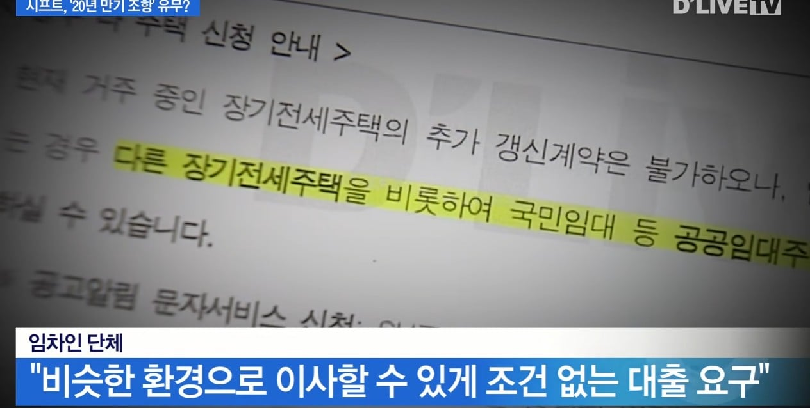

sh에서 계약한 계약서에는 20년기한이 있지만
2년마다 갱신하는 계약서와 공고문에는 그 내용이 빠져 있기 때문에
자신들은 20년이 지난 지금에도 여전히 퇴거할 이유가 없다고 주장중이라고 함



sh에서 계약한 계약서에는 20년기한이 있지만
2년마다 갱신하는 계약서와 공고문에는 그 내용이 빠져 있기 때문에
자신들은 20년이 지난 지금에도 여전히 퇴거할 이유가 없다고 주장중이라고 함
나라에서 주거비 아껴서 목돈 모으라고 만든 정책인데 20년동안 주거 안정 챙겨주니깐 권리로 알고 있네;;
사회 복지의 부담만 주는 기생충 다운 사람이네
이거 완전 공지사항에 커닝하라지 말라고 명시하지 않았으니 커닝해도 된다는 애들이랑 수준이 똑같잖아??
어? 이거 완전 트남..
그럼 시발 sh20년쓰고나서 2년마다 쓰는 계약서 있으니깐 sh가 니들 2년 치 살았으니깐 ㄲㅈ이럼 ㅇㅋ할꺼임??? ㅋㅋㅋㅋ
대체 얼굴 까고 얼마나 추해지고 싶은거냐
빨리 꺼지시고 다음 세대한테 자리 양보좀 하자
갱신 계약서에 최장20년 적혀있으면
갱신일로부터 20년이라고 해석 될 수 있지 않을까
뭉개고 눌러 앉아있는 기간만큼 주변 시세로 보증금 없는 월세로 해서 청구해야함
좀 꺼져 이 씨발것들아
최초계약은 계약 아니냐? 이 무슨 말도 안되는..